About
About Projects
Projects Games
Games Stories
Stories Store
Store Hobby
Hobby Notes
Notes How-to
How-to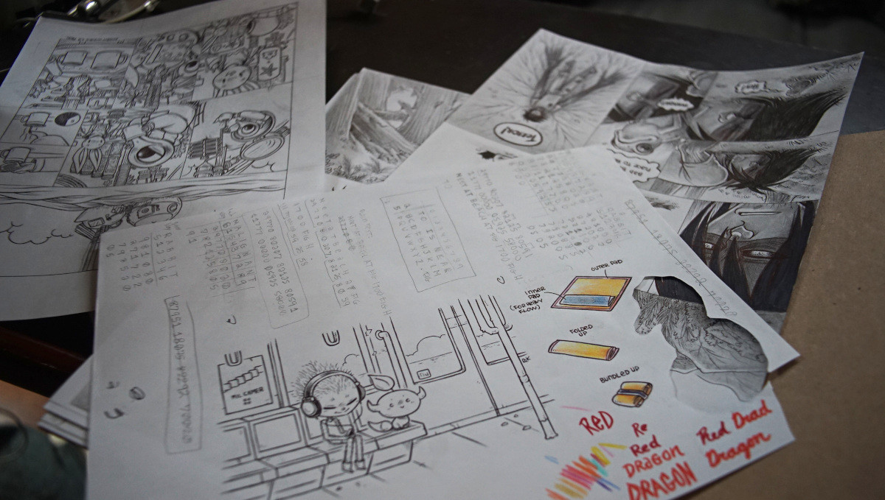
I draw as much as I can on paper, I love it, I get to spend more time off-screen, I don't depend on any specific software to produce my art, and it means that I'll always have hard copies of my work that I can refer to, or re-process should I lose the digital copy.
To scan my paper art, I have a used CanoScanLiDE20 and use Simple Scan (see using a scanner under linux for more information). How the drawing will come out depends on the default settings of your scanning software. With Simple Scan, I typically leave things as is, and take care of the processing in Gimp. I have used Krita in the past, but Gimp is less bloated overall and everything I could do in Krita I can do in Gimp.
I hope, in the future, to further lessen the steps I have to do digitally, in the meantime, here is how I get my art to look good after scanning. Note that I'm not claiming that this is the best possible way to process art done on paper, but it's a way that works for me and that is also replicable with image editing software other than Gimp.
Line art
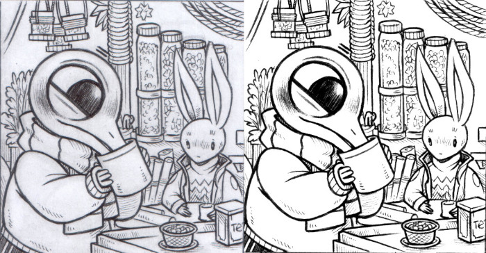
Processing line art is the easiest. In the above image, the one to the left is what it looks like when first scanned, and the one on the right is after it was processed in Gimp.
The first thing I do when processing the image in Gimp is to set the drawing to greyscale.
The drawing often has a bit of a colored hue to it, to get rid of it I go to: Image>Mode, and select Grayscale.
Changing the image mode to grayscale though will mean that it won't be possible to put color, unless converted back to RGB. It is also possible to apply a greyscale to the image by selecting Colors > Hue-Saturation in the nav bar, and to bring the saturation down -100%.
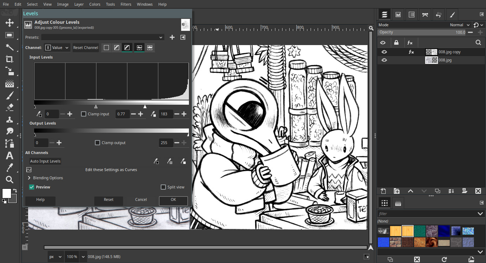
Then, in the nav bar, I select: Colors > Levels, and move the arrows around in the "Input Window" to create contrast, to get the whites as white, and the blacks as black as I can get them to be.
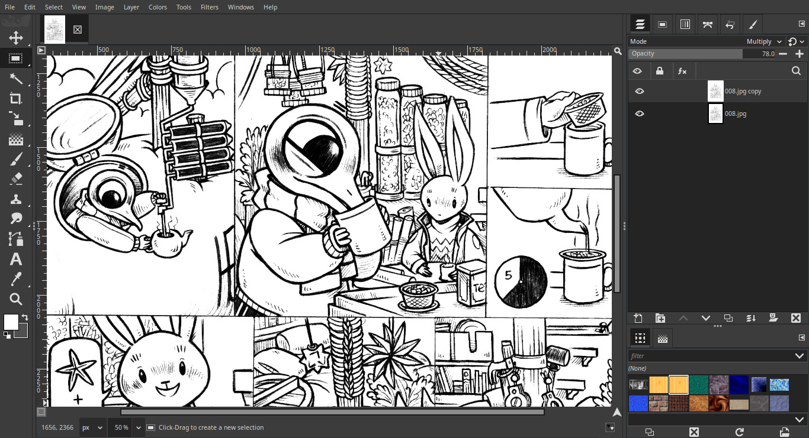
To make the lines a bit more bold, I occasionally duplicate the layer and set the "layer mode" of the new layer to Multiply. I lower the opacity of the layer depending on the look that I want for the image.
Pencil art with shading
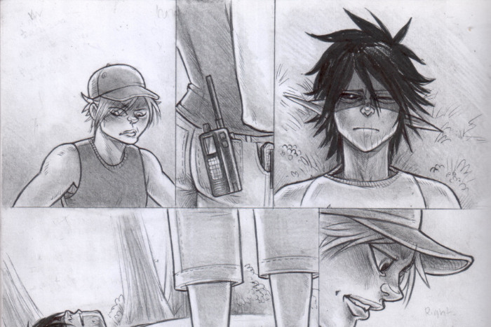
This is what my pencil art looks like after scanning. The first thing I do in Gimp, like with the line art described above, is to set the drawing to greyscale. I won't be adding color to this drawing, so setting it to that mode is fine.
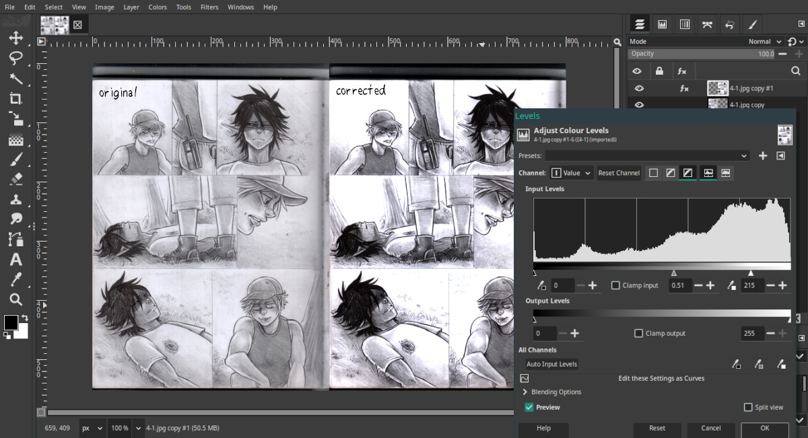
Then, I go to Colors > Levels in the nav bar, and like with the line art, play with the arrows until I have the look I want.
For pencil art with shading my settings won't always be the same, it depends on the drawing. If say, I'm not able to darken an image enough using my pencils, I may try and darken it a little bit more using levels, but I try not to darken too much because otherwise it becomes less smooth and ruins the shading.
I get a lot of weird artifacts when drawing, sometimes because there's a hard bit under the sheet of paper and when I shade overtop it creates dark spots, my eraser also occasionally leaves smudges, and sometimes my scanner bed is full of eraser shavings. Overall, I'm pretty messy when I draw.
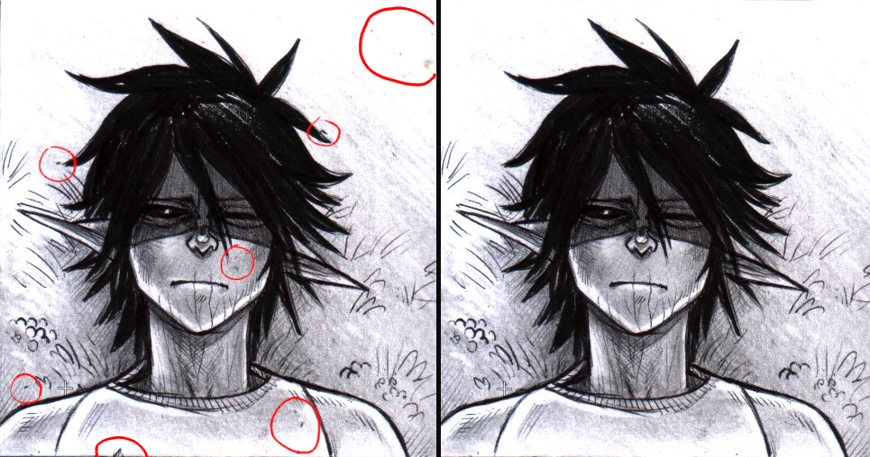
To remove unwanted smears or dirt from the image, I use the clone tool, selecting areas similarly textured nearby and making the necessary corrections. In the above image, the one on the left was cleaned up with the clone tool. Another sure way to not have to do much clean is to clean your scanner bed(I'm lazy), and to keep your erasers clean.
Next, I usually make a "highlight" pass to bring out the white areas in my drawing, or to remove artifacts that the "level" pass did not catch.
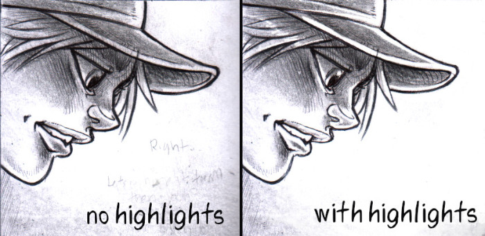
I create a separate empty layer overtop of the main layer, and paint with a white brush with the layer mode set to Overlay.
I then start painting over the white areas I want to "boost", usually near the outlines of the character, eyes, background, etc.
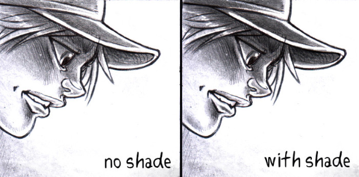
I also usually add another layer to add more shadows(contrast) to the drawing, by painting with a black brush with the layer mode set as Overlay.
Sometimes, I'll add a layer filled with a dark grey color overtop, set the layer mode to Overlay, and bring the opacity down to something like 30%. The darker I want the image to be, the higher the opacity.
Below is an example from a comic I drew in 2023 called night terror, because the whole sequence takes place at night, I need the scene to be fairly dark, and also for the characters to come out, so I "boosted" a lot of the tones with extra layers with painted dark and light overlays.
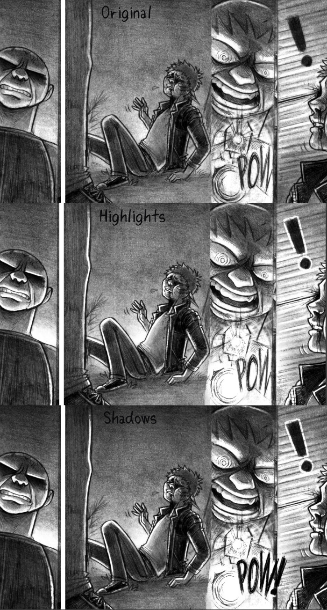
(I used to draw a white outline around characters to make them stand out, but I no longer do that, I've just learned to weigh the light and dark in scenes better.)
Color drawing
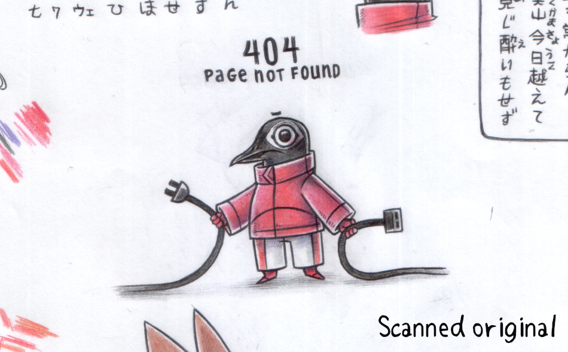
Like with all of my scanned art, for a scanned color drawing I first play with the levels to bring out the tones of the colors a little.
I don't usually put the white level too high because then it starts to alter the colors too much, I usually have the original next to me and try to match the tone as much as I can.
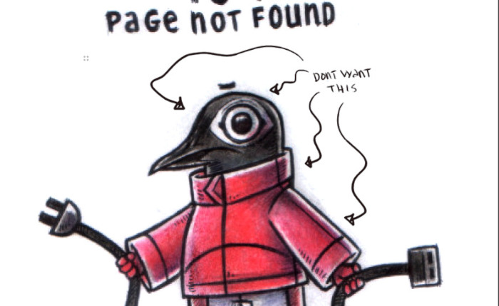
In the above example, there are some artifacts around the bird, especially around the head that is still there even after playing with levels because I didn't want the white level to be too high. I usually fix this by creating a new layer, and painting over with a white brush with the layer mode set to Overlay.
Below is the final processed image, with all of the other drawings around it erased.
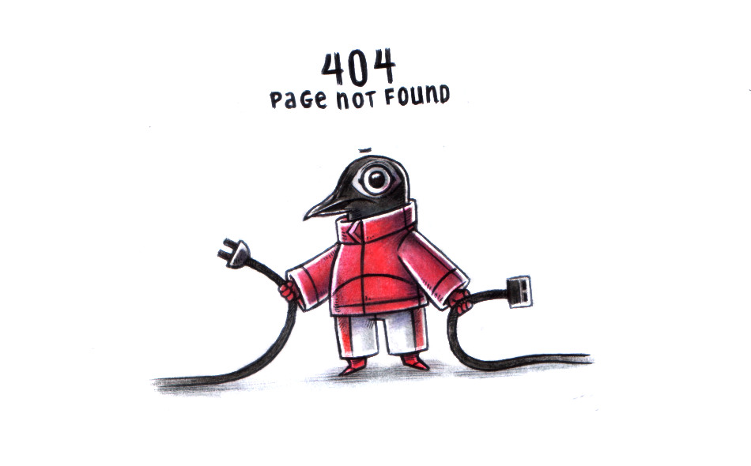
I also drew over the white areas, around the eyes, and on the edges of the pants/jacket too to bring up the contrast. It is sometimes hard to see whether or not there are still artifacts left, but tilting my laptop screen back a bit permits me to see them and to make corrections.
Color Boost? Sometimes I go to Color>Hue-saturation and make the drawing greyer by moving the saturation slider to the left, or boost the colors by moving the slider to the right.
Color Change? Sometimes, if I find that the colors in the original aren't quite right, I play with the color balance (Colors>Balance) and play with the Shadows, Midtones and Highlights. I rarely do this though, this is only if a color I used is slighly off, like if I made a mistake and I want it to match with another drawing.
Written on 2026-09-07.